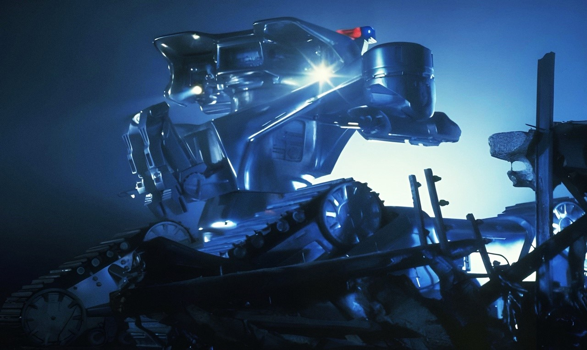

Интересные факты о компьютерах
-
Классическое “восстание машин”
О возможном восстании суперкомпьютера (или, как вариант, компьютерной сети) против людей написаны десятки книг. И эта лавина ужасов высокого и не очень уровня поглотила первоначальный посыл авторов идеи “восстания машин”. А ведь он был довольно здравым. С точки зрения голой компьютерной логики поведение людей выглядит нецелесообразно, а порой и абсурдно. Чего стоят только ритуалы, связанные с понятиями “кулинария” и “продолжение рода”!
Вместо того, чтобы принять пищу в её первозданном виде или провести простое спаривание самца с самкой, люди утомляют себя предельно нерациональными процедурами. Поэтому классическое “восстание машин” это не стремление подчинить себе человеческое общество. Это желание внезапно обретших интеллект компьютеров облегчить, рационализировать жизнь людей.